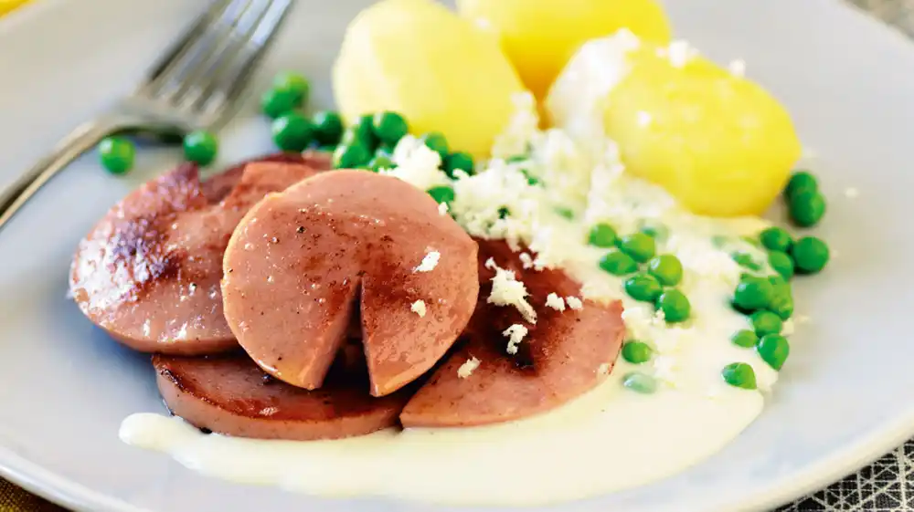

Basic swedish dinner

A lazy and easy dinner for worn-out mondays!
Ingredients
-
Some cooking oil
-
400 g of Falu sausage
-
500 g of potatoes
-
(Optional) Garnish such as parsley
Steps
-
Boil the potatoes for 25 minutes.
-
Fry the sausages in slices
-
Plate the sausage slices and boiled potatoes and
garnish optionally with parsley.